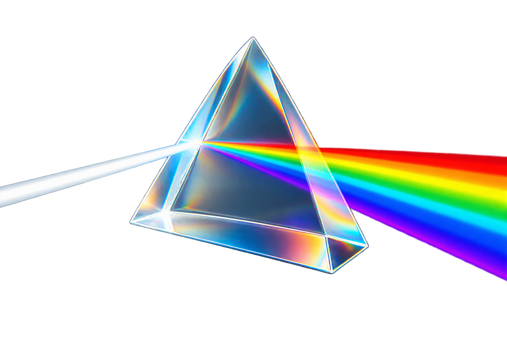
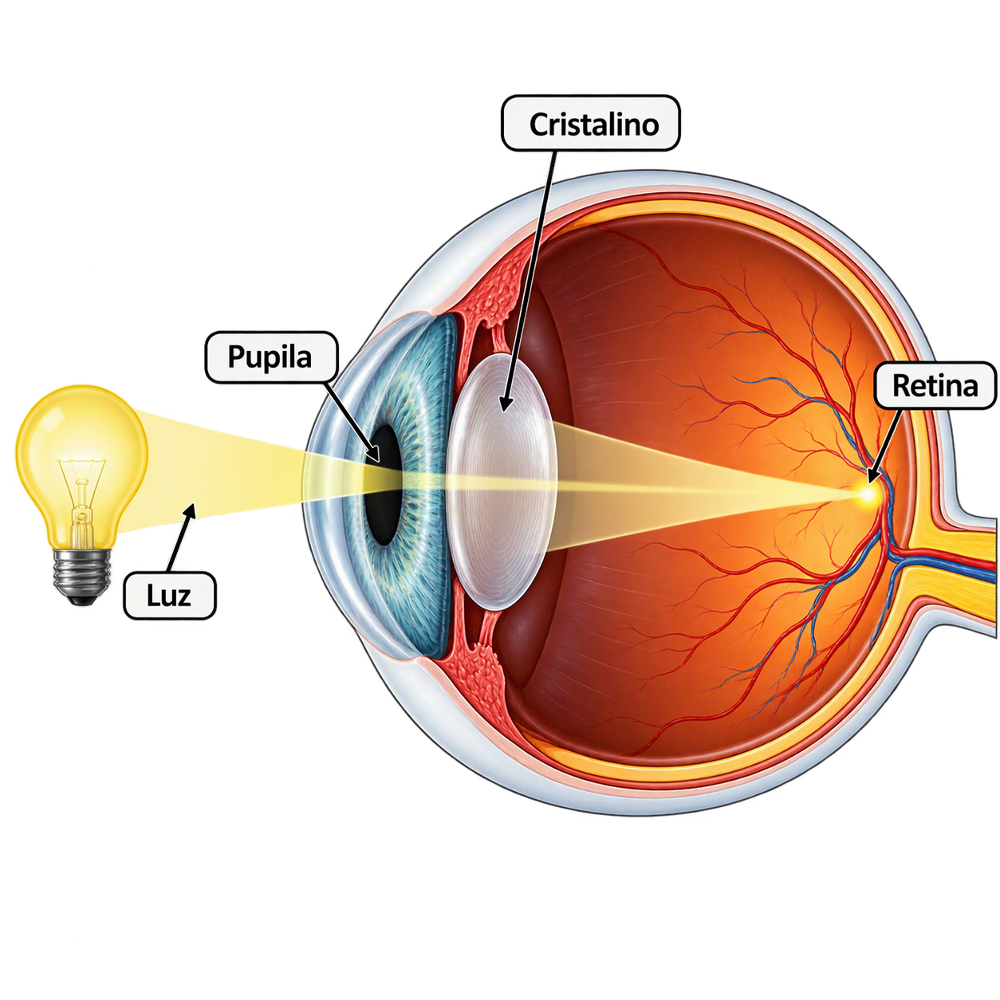
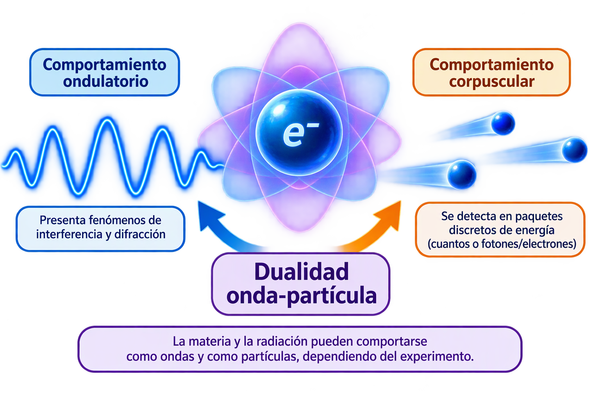
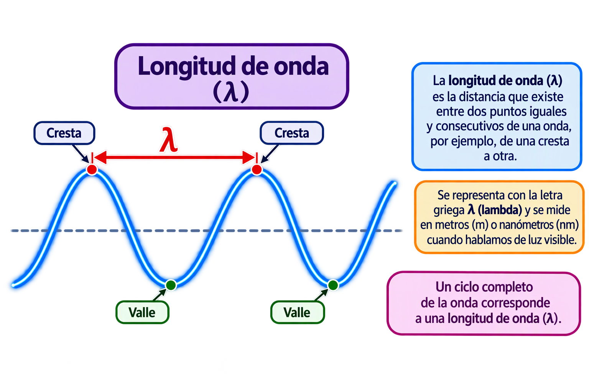
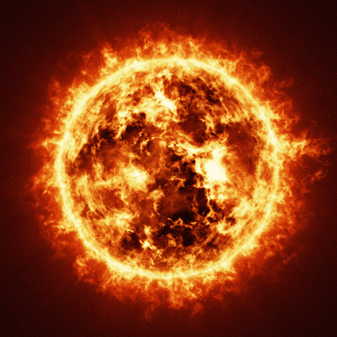
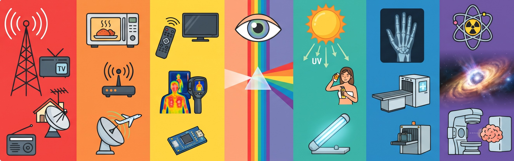
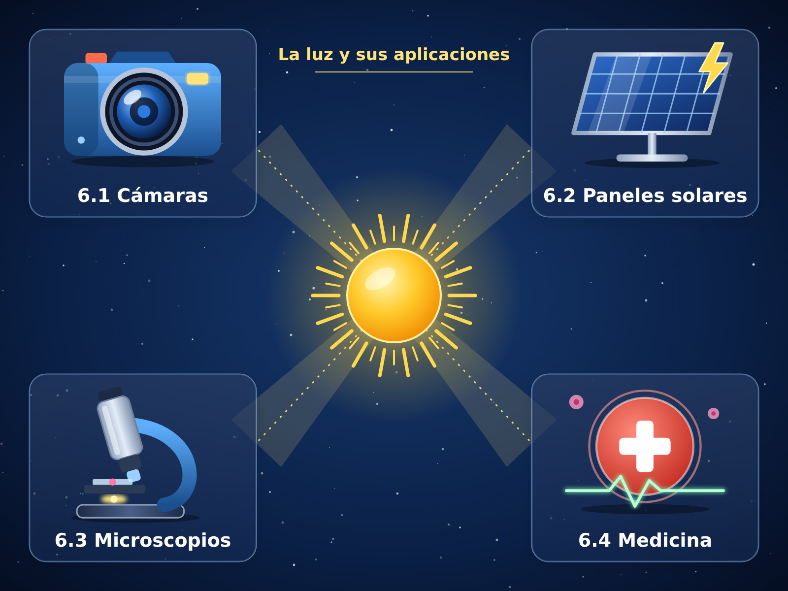
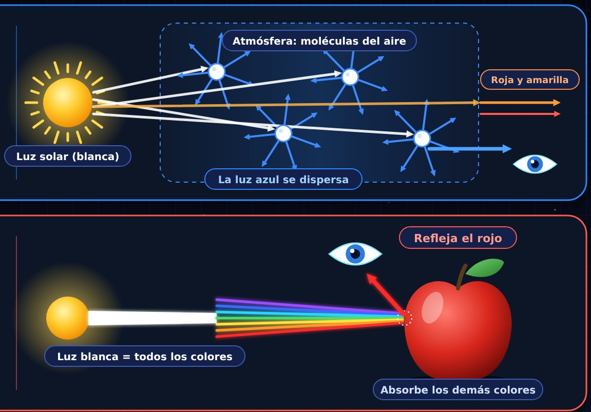
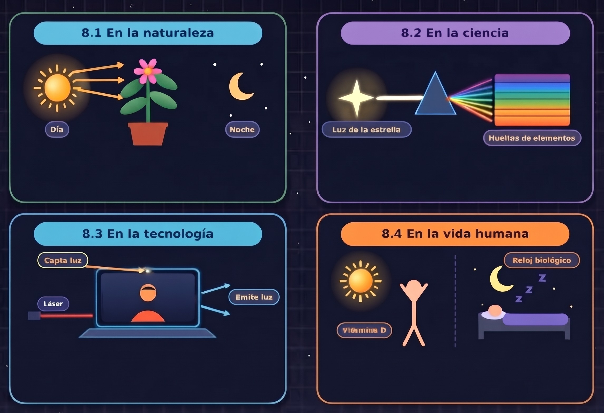

¿Qué es la luz?
La luz es una forma de energía que se propaga como radiación electromagnética. La parte que pueden detectar nuestros ojos recibe el nombre de luz visible. Gracias a ella podemos ver los objetos y distinguir colores.

Qué es, cómo se comporta y por qué hace posible la vida y la tecnología
Comenzar
La luz es una forma de energía que se propaga como radiación electromagnética. La parte que pueden detectar nuestros ojos recibe el nombre de luz visible. Gracias a ella podemos ver los objetos y distinguir colores.
Cuando un electrón de un átomo pasa a un nivel de menor energía, puede emitir esa diferencia en forma de un fotón. Cada fuente puede producirla por mecanismos diferentes.
La luz atraviesa la pupila; el cristalino ayuda a enfocarla sobre la retina. Allí, los conos y bastones convierten la señal luminosa en impulsos nerviosos que el cerebro interpreta.
Ejemplo : En una habitación oscura apenas distinguimos una mesa. Al encender un foco, la luz llega a la mesa, se refleja y entra en nuestros ojos.
La luz no solo ilumina: también transporta energía e información. Es esencial para la visión, las plantas, la fotografía y muchas tecnologías.
La luz presenta una dualidad onda-partícula: según el experimento que se realice, puede mostrar comportamientos que se describen mediante ondas o mediante partículas llamadas fotones.

La luz se comporta como una onda electromagnética formada por campos eléctricos y magnéticos que se propagan incluso en el vacío. Este comportamiento permite explicar fenómenos como la reflexión, refracción, difracción e interferencia.
Ejemplo: Cuando la luz del Sol atraviesa un prisma, se separa en diferentes colores debido a la refracción y dispersión.
La luz también se comporta como partículas que transportan energía, llamadas fotones. Estos pueden transferir su energía a los materiales cuando la luz interactúa con ellos.
Ejemplo: Los paneles solares absorben la energía de los fotones y la transforman en energía eléctrica.
Un fotón es un paquete pequeño de energía que forma parte de la radiación electromagnética. No tiene masa en reposo y viaja a la velocidad de la luz en el vacío. Su energía depende de su frecuencia: cuanto mayor es la frecuencia, mayor es su energía.
Es la propiedad de la luz de presentar comportamientos tanto de onda como de partícula, dependiendo del experimento con el que se estudie. Ambos comportamientos son necesarios para comprender cómo funciona la luz.

La longitud de onda es la distancia que existe entre dos puntos iguales y consecutivos de una onda, por ejemplo, de una cresta a otra. Se representa con la letra griega λ (lambda) y se mide en metros o nanómetros cuando hablamos de luz visible.
Ejemplo: En una cuerda, la distancia entre dos crestas seguidas es la longitud de onda.
La frecuencia es la cantidad de ciclos u oscilaciones que realiza una onda en un segundo. Se representa con la letra f y se mide en hertz (Hz). En la luz, la frecuencia está relacionada con su color y energía. Cuanto mayor es la frecuencia, mayor es la energía de sus fotones.
Ejemplo: Imagina que mueves una cuerda:
Si la mueves lentamente, produces pocas ondas por segundo: frecuencia baja.
Si la mueves rápidamente, produces más ondas por segundo: frecuencia alta.
La amplitud es el tamaño de la oscilación. Una amplitud mayor suele corresponder a mayor intensidad luminosa (energía por unidad de área y tiempo).
Ejemplo: Una linterna cerca de la pared ilumina con más intensidad que desde lejos, porque la luz se reparte en una región mayor.
Es la pequeña región del espectro que detecta el ojo humano. El rojo tiene mayor longitud de onda que el violeta. La mezcla de muchas longitudes de onda visibles se percibe como luz blanca.
Una fuente luminosa es un cuerpo que emite luz. Se clasifican por su origen y según produzcan luz propia o reflejen la que reciben.

Sol, estrellas, relámpagos y luciérnagas (bioluminiscencia).
Ejemplo cotidiano: El Sol ilumina el patio sin encender ningún dispositivo.
Creadas por las personas: focos LED, pantallas, velas y láseres.
Ejemplo cotidiano: Una lámpara LED por la noche.
Producen y emiten su propia luz: el Sol, una estrella o un foco encendido.
No producen luz visible propia; reflejan la que reciben: la Luna, un libro, una pared iluminada.
Ejemplo cotidiano: La Luna brilla porque refleja la luz del Sol.
El espectro electromagnético es el conjunto de todas las ondas electromagnéticas que existen. Se clasifican según su longitud de onda y frecuencia. Está formado por siete tipos principales:

Son ondas de gran longitud de onda que se utilizan para transmitir información a través de la radio, televisión y algunas comunicaciones.
Se utilizan en los hornos para calentar alimentos y en sistemas de comunicación, como el Wi-Fi y los radares.
Es una radiación relacionada con el calor. Se utiliza en controles remotos, cámaras térmicas y sensores.
Es la única parte del espectro que podemos observar con nuestros ojos. Incluye los colores del arcoíris.
Es una radiación emitida por el Sol. En pequeñas cantidades ayuda al cuerpo a producir vitamina D, pero una exposición excesiva puede dañar la piel.
Son radiaciones capaces de atravesar algunos materiales y se utilizan principalmente en estudios médicos para observar los huesos.
Son ondas electromagnéticas de muy alta energía. Se producen en fenómenos radiactivos y cósmicos, y tienen aplicaciones controladas en algunos tratamientos médicos.

Utilizan la luz para capturar imágenes. Su lente permite que la luz llegue a un sensor que forma las fotografías.
Aprovechan la luz del Sol para transformarla en energía eléctrica, que puede utilizarse en diferentes aparatos.
Utilizan luz y lentes especiales para ampliar imágenes de objetos muy pequeños que no podemos observar a simple vista.
La luz se utiliza en diferentes equipos médicos para realizar diagnósticos, observar tejidos y aplicar algunos tratamientos.

El cielo se ve azul porque las moléculas del aire dispersan la luz solar, especialmente la luz azul, en diferentes direcciones.
Los objetos absorben algunos colores de la luz y reflejan otros. Por ejemplo, una manzana se ve roja porque refleja principalmente la luz roja.

La luz solar da la energía para la fotosíntesis e influye en los ciclos de actividad de los seres vivos.
Ejemplo cotidiano: Una planta necesita iluminación adecuada para desarrollarse.
Analizar la luz de una estrella permite estudiar su composición y condiciones físicas.
Ejemplo cotidiano: Los astrónomos investigan qué elementos forman las estrellas.
Hace posibles pantallas, sensores, cámaras, fibra óptica, láseres y energía solar.
Ejemplo cotidiano: En una videollamada la cámara capta luz y la pantalla emite luz.
Permite la visión y sincroniza el reloj biológico; la exposición solar participa en la producción de vitamina D, aunque hay que evitar el exceso de radiación ultravioleta.
Ejemplo cotidiano: La luz de día nos activa; la oscuridad de noche favorece el descanso.
Idea: ¿Por qué una manzana es roja? Porque refleja principalmente la luz roja y absorbe otros colores. Aquí lo compruebas: elige un tipo de luz y un objeto y observa de qué color lo ves. ¿Cómo ayuda? Cambias una variable y ves el resultado al instante, así relacionas causa y efecto.
1. Elige la luz:
2. Elige el objeto:
Selecciona una luz y un objeto para comenzar el experimento.
La luz es mucho más que aquello que nos permite ver, es una forma de energía fundamental para la naturaleza, la ciencia y la tecnología. A lo largo de esta investigación comprendimos que puede comportarse como onda y como partícula, que posee características como la longitud de onda y la frecuencia, y que forma parte de un amplio espectro electromagnético. También conocimos sus diferentes fuentes, aplicaciones y su importancia en nuestra vida cotidiana. Finalmente, mediante el laboratorio interactivo, pudimos comprobar cómo el tipo de luz influye en el color con el que percibimos los objetos. En conclusión, estudiar la luz nos ayuda a entender mejor los fenómenos que ocurren a nuestro alrededor y reconocer cómo sus propiedades hacen posibles muchos de los avances científicos y tecnológicos que utilizamos diariamente.